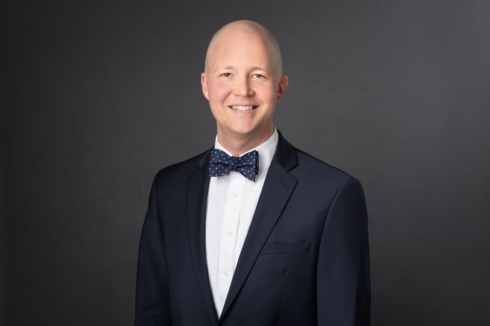

Experience
- Morgan Stanley — Financial Planning Director
- UBS Financial Services — Financial Advisor and Wealth Planning Associate
- Wyatt & Mirabella, PC — Associate Attorney
- Coplen & Banks, P.C. — Associate Attorney


David Julian is an attorney and CERTIFIED FINANCIAL PLANNER™ professional. He blends legal training with years of hands‑on experience building comprehensive financial and estate plans. His practice focuses on helping Texas families craft clear, tax‑aware strategies for passing assets, caring for loved ones, and preserving legacies.